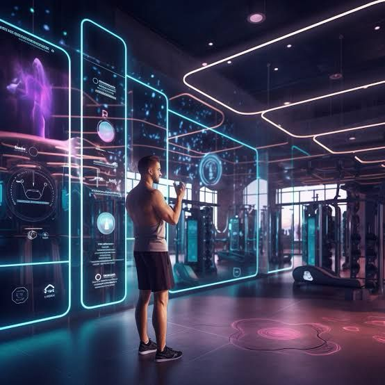

Projeto pessoal
Sistema de Inteligência Artificial, dedicado à Correção de movimentos na Musculação. A motivação por trás deste projeto surge da necessidade premente de aprimorar a qualidade da prática de exercícios, visando não apenas o desempenho otimizado, mas também a prevenção de lesões. A abordagem adotada integra tecnologias avançadas de visão computacional e aprendizado de máquina. A utilização de algoritmos de estimação de pose, permite a análise minuciosa da postura do usuário durante os exercícios.
Desenvolvedor: |
Leandro Ricardo Guimarães |
Skills: |
Python, processamento de imagem, Inteligência artificial |
Funcionamento |
||